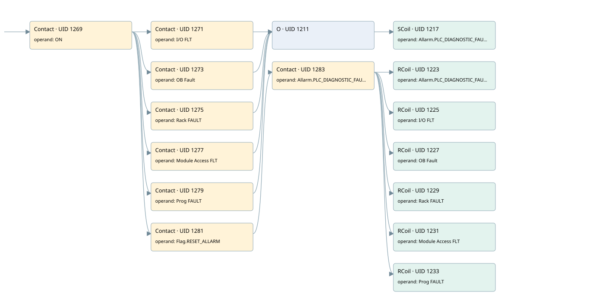

plc hardware diagnostic fault fault
allarms 3 · 검색 색인 순서 16 · 원본 내부 NID 추정 16
백업 PLF 원본의 3182698 바이트 위치에서 복원한 XML. 검색 문서 1994의 객체 키 16102200806b000000000000와 연결했다. 이름 해석 15/15개. 남은 RefId는 상수 또는 미해석 참조다.
연결 구조 다시 그리기
원본 Part/PCon/Wire를 이용한 연결도다. TIA 화면의 래더 배치 또는 실행 결과를 재현한 그림은 아니다. 핀 연결은 아래 표와 원본 XML을 기준으로 읽는다. 노드 위에 마우스를 두면 피연산자 이름을 볼 수 있다.

접점·코일·블록과 피연산자
| Part UID | Gate | Negated 핀 | 연결 피연산자 |
|---|---|---|---|
| 1269 | Contact | operand = ON | |
| 1271 | Contact | operand = I/O FLT | |
| 1273 | Contact | operand = OB Fault | |
| 1275 | Contact | operand = Rack FAULT | |
| 1277 | Contact | operand = Module Access FLT | |
| 1279 | Contact | operand = Prog FAULT | |
| 1211 | O | ||
| 1217 | SCoil | operand = Allarm.PLC_DIAGNOSTIC_FAULT | |
| 1281 | Contact | operand = Flag.RESET_ALLARM | |
| 1283 | Contact | operand = Allarm.PLC_DIAGNOSTIC_FAULT | |
| 1223 | RCoil | operand = Allarm.PLC_DIAGNOSTIC_FAULT | |
| 1225 | RCoil | operand = I/O FLT | |
| 1227 | RCoil | operand = OB Fault | |
| 1229 | RCoil | operand = Rack FAULT | |
| 1231 | RCoil | operand = Module Access FLT | |
| 1233 | RCoil | operand = Prog FAULT |
접점 경로를 펼친 조건식
Contact·O/A·비교기의 원본 연결을 읽기 쉽게 펼친 보조 해석이다. POWER는 전원 레일 시작을 뜻한다. 호출 블록·에지·타이머의 내부 동작과 다중 쓰기 순서는 이 표로 실행 검증하지 않았다. 미해석 핀과 RefId는 원문 연결표에서 확인한다.
| UID | 동작 | 대상 | 원본 접점 경로 | 내용 |
|---|---|---|---|---|
| 1217 | SCoil | Allarm.PLC_DIAGNOSTIC_FAULT | ((ON AND I/O FLT) OR (ON AND OB Fault) OR (ON AND Rack FAULT) OR (ON AND Module Access FLT) OR (ON AND Prog FAULT)) | 조건 성립 시 Set |
| 1223 | RCoil | Allarm.PLC_DIAGNOSTIC_FAULT | ((ON AND Flag.RESET_ALLARM) AND Allarm.PLC_DIAGNOSTIC_FAULT) | 조건 성립 시 Reset |
| 1225 | RCoil | I/O FLT | ((ON AND Flag.RESET_ALLARM) AND Allarm.PLC_DIAGNOSTIC_FAULT) | 조건 성립 시 Reset |
| 1227 | RCoil | OB Fault | ((ON AND Flag.RESET_ALLARM) AND Allarm.PLC_DIAGNOSTIC_FAULT) | 조건 성립 시 Reset |
| 1229 | RCoil | Rack FAULT | ((ON AND Flag.RESET_ALLARM) AND Allarm.PLC_DIAGNOSTIC_FAULT) | 조건 성립 시 Reset |
| 1231 | RCoil | Module Access FLT | ((ON AND Flag.RESET_ALLARM) AND Allarm.PLC_DIAGNOSTIC_FAULT) | 조건 성립 시 Reset |
| 1233 | RCoil | Prog FAULT | ((ON AND Flag.RESET_ALLARM) AND Allarm.PLC_DIAGNOSTIC_FAULT) | 조건 성립 시 Reset |
원본 배선 연결
| Wire UID | 동일 Wire 연결 끝점 |
|---|---|
| 1285 | Powerrail {} ↔ Part 1269.in |
| 1250 | ORef 1235 (ON) ↔ Part 1269.operand |
| 1270 | Part 1269.out ↔ Part 1271.in ↔ Part 1273.in ↔ Part 1275.in ↔ Part 1277.in ↔ Part 1279.in ↔ Part 1281.in |
| 1251 | ORef 1236 (I/O FLT) ↔ Part 1271.operand |
| 1272 | Part 1271.out ↔ Part 1211.in1 |
| 1252 | ORef 1237 (OB Fault) ↔ Part 1273.operand |
| 1274 | Part 1273.out ↔ Part 1211.in2 |
| 1253 | ORef 1238 (Rack FAULT) ↔ Part 1275.operand |
| 1276 | Part 1275.out ↔ Part 1211.in3 |
| 1254 | ORef 1239 (Module Access FLT) ↔ Part 1277.operand |
| 1278 | Part 1277.out ↔ Part 1211.in4 |
| 1255 | ORef 1240 (Prog FAULT) ↔ Part 1279.operand |
| 1280 | Part 1279.out ↔ Part 1211.in5 |
| 1256 | Part 1211.out ↔ Part 1217.in |
| 1258 | ORef 1241 (Allarm.PLC_DIAGNOSTIC_FAULT) ↔ Part 1217.operand |
| 1259 | ORef 1242 (Flag.RESET_ALLARM) ↔ Part 1281.operand |
| 1282 | Part 1281.out ↔ Part 1283.in |
| 1260 | ORef 1243 (Allarm.PLC_DIAGNOSTIC_FAULT) ↔ Part 1283.operand |
| 1284 | Part 1283.out ↔ Part 1223.in ↔ Part 1225.in ↔ Part 1227.in ↔ Part 1229.in ↔ Part 1231.in ↔ Part 1233.in |
| 1261 | ORef 1244 (Allarm.PLC_DIAGNOSTIC_FAULT) ↔ Part 1223.operand |
| 1262 | ORef 1245 (I/O FLT) ↔ Part 1225.operand |
| 1263 | ORef 1246 (OB Fault) ↔ Part 1227.operand |
| 1264 | ORef 1247 (Rack FAULT) ↔ Part 1229.operand |
| 1265 | ORef 1248 (Module Access FLT) ↔ Part 1231.operand |
| 1266 | ORef 1249 (Prog FAULT) ↔ Part 1233.operand |
식별자 해석 근거 15개
| ORef UID | RefId | 이름 | IdentXmlPart 파일 | 해석 방법 |
|---|---|---|---|---|
| 1235 | 1 | ON | 0686-IdentXmlPart.xml | UID/RID + search-text + NID agreement |
| 1236 | 129 | I/O FLT | 0686-IdentXmlPart.xml | UID/RID + search-text + NID agreement |
| 1237 | 130 | OB Fault | 0686-IdentXmlPart.xml | UID/RID + search-text + NID agreement |
| 1238 | 131 | Rack FAULT | 0686-IdentXmlPart.xml | UID/RID + search-text + NID agreement |
| 1239 | 132 | Module Access FLT | 0686-IdentXmlPart.xml | UID/RID + search-text + NID agreement |
| 1240 | 133 | Prog FAULT | 0686-IdentXmlPart.xml | UID/RID + search-text + NID agreement |
| 1241 | 134 | Allarm.PLC_DIAGNOSTIC_FAULT | 0684-IdentXmlPart.xml | UID/RID + search-text + NID agreement |
| 1242 | 24 | Flag.RESET_ALLARM | 0684-IdentXmlPart.xml | UID/RID + search-text + NID agreement |
| 1243 | 134 | Allarm.PLC_DIAGNOSTIC_FAULT | 0684-IdentXmlPart.xml | UID/RID + search-text + NID agreement |
| 1244 | 134 | Allarm.PLC_DIAGNOSTIC_FAULT | 0684-IdentXmlPart.xml | UID/RID + search-text + NID agreement |
| 1245 | 129 | I/O FLT | 0686-IdentXmlPart.xml | UID/RID + search-text + NID agreement |
| 1246 | 130 | OB Fault | 0686-IdentXmlPart.xml | UID/RID + search-text + NID agreement |
| 1247 | 131 | Rack FAULT | 0686-IdentXmlPart.xml | UID/RID + search-text + NID agreement |
| 1248 | 132 | Module Access FLT | 0686-IdentXmlPart.xml | UID/RID + search-text + NID agreement |
| 1249 | 133 | Prog FAULT | 0686-IdentXmlPart.xml | UID/RID + search-text + NID agreement |
검색 코드 보조 자료
참조 명칭을 찾기 위한 자료이며 실행 순서나 AND/OR 관계는 위 연결표로 확인한다.
"on" "i/o flt" "allarm".plc_diagnostic_fault "ob fault" "rack fault" "module access flt" "prog fault" "flag".reset_allarm "allarm".plc_diagnostic_fault "allarm".plc_diagnostic_fault "i/o flt" "ob fault" "rack fault" "module access flt" "prog fault"